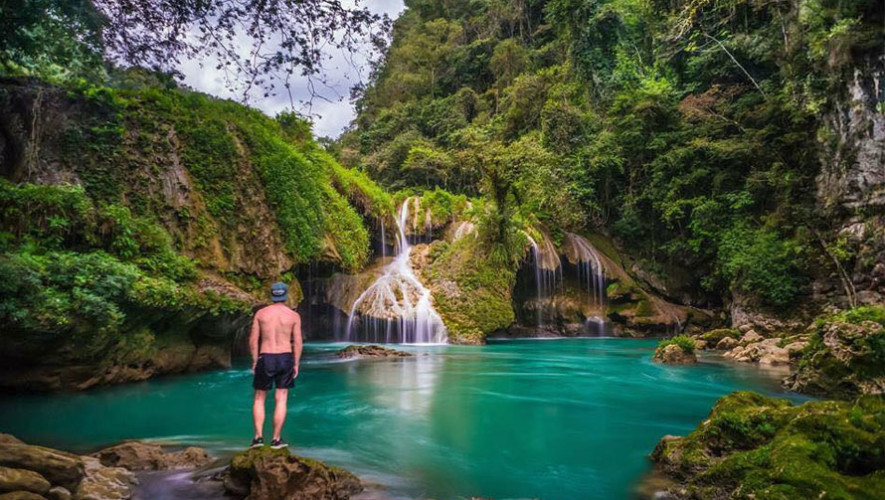
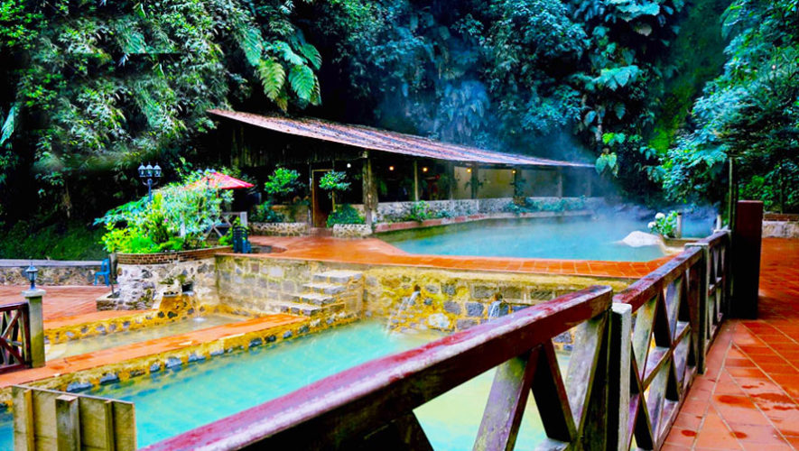
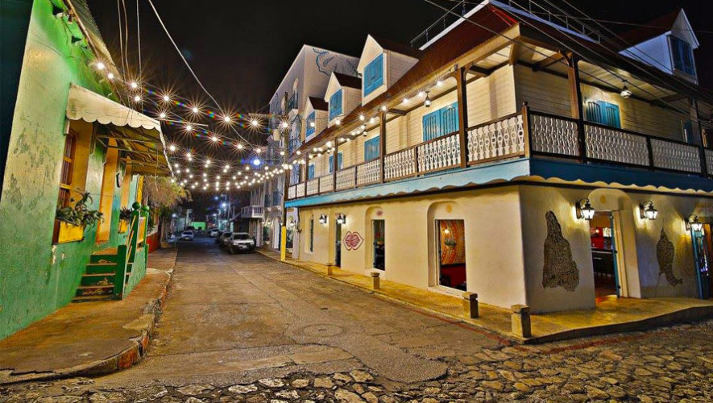
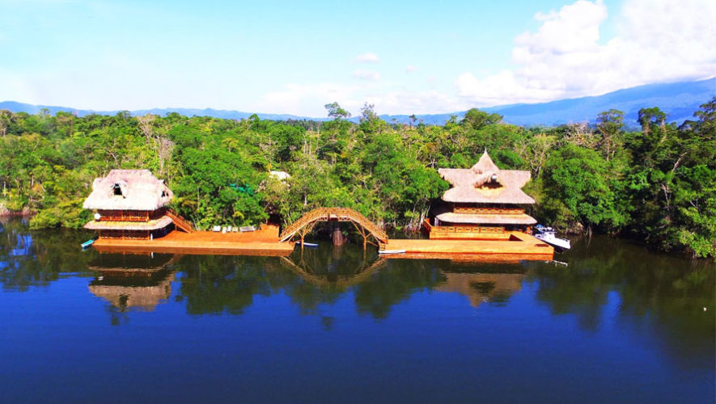
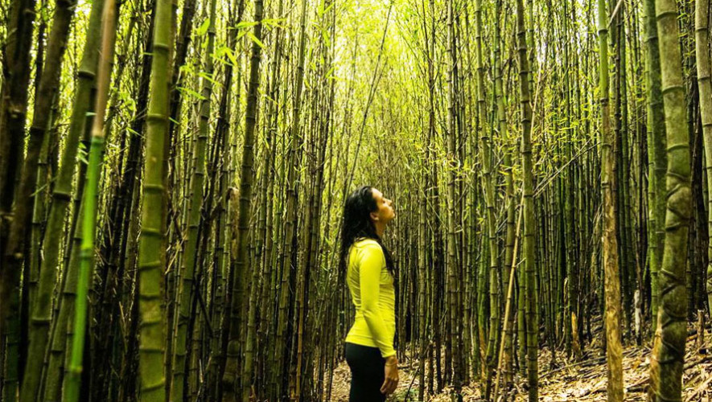

Un ríncon del mundo en
Guatemala
Nota: Para mayor información pulsar en las imagenes
- Semuc Champey
Es sin duda es uno de los destinos más reconocidos de Guatemala. Ocupa una especie de puente natura,
alrededor de 300 metros de largo en los que hay lagunas con profundidades de uno hasta cuatro metros, es
posible nadar en sus aguas cristalinas y disfrutar de la naturaleza.

- Fuentes Georginas
Se trata de una serie de piscinas naturales que se llenan de agua termal proveniente de las montañas
del departamento de Quetzaltenango. Este balneario es muy relajante, ya que te encontrarás rodeado de
bosque nuboso. Actualmente cuenta con 7 piscinas de agua caliente

- Isla de Flores
Si quieres salir de la rutina en uno de los destinos más paradisíacos de Guatemala, sin duda conocer la
Isla de Flores es una excelente opción. Este sitio se caracteriza por sus terrarzas con sita y restaurantes
de comida gourmet.El ambiente de la islaes alegre, con un clima agradable y una vista increíble.

- Parque Tenamit Maya
Descubre estor sorprendentes lugares ubicados en medio de la selva de Guatemala, desde toboganes abandonados
hasta un restaurante en medio de la selva tropical de Guatemala. Si eres amante de la aventura y descubrir nuevos destinos,
sin duda esta guía es para ti. Además, estas opciones son perfectas porque vas a descubrir nuevos lugares extremos y divertidos.

- Bosque de Bambú
El único bosque de bambú se encuentra ubicado dentro de una reserva natural ubicada en Baja Verapaz, Ram Tzul
es un destino ideal para los amantes de las cascadas, la naturaleza y los miradores para relajarse.
